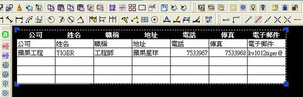
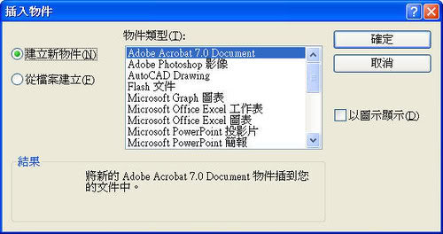
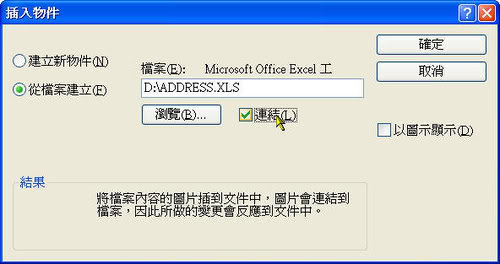
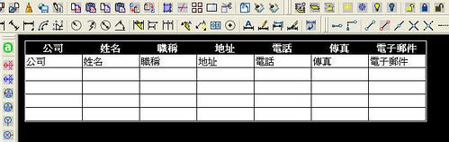
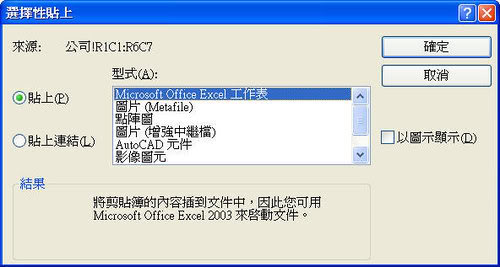

在圖面中連結 OLE 物件
將資訊從另一文件連結至圖面時，如果資訊在來源文件中發生變更，則圖面中的資訊將隨之更新。
編輯後Excel存檔:

AutoCAD 的 Excel 同步更新:

***已下方法適用版本為 AutoCAD 2000 本以上***
提供2個方法，步驟如下:
方法1:
1.「插入」功能表：→「OLE 物件」


→ 點選_從檔案建立

→ 瀏覽(選取要連結的檔案) → 點選_連結(建立與選定檔案的連結)。


2.完成連結後可直接在 AutoCAD 編輯 OLE 物件，在圖面中按兩下連結的 OLE 物件

來開啟來源應用程式，可以編輯此物件。

方法2:
1.開啟 Windows 檔案，

選取範圍後使用 Windows「複製」。


2.「編輯」功能表：→「選擇性貼上」


→ 點選_貼上連結(建立一個到原始檔案的連結)。


3.完成連結後可直接在 AutoCAD 編輯 OLE 物件，在圖面中按兩下連結的 OLE 物件

來開啟來源應用程式，可以編輯此物件。

PS:1.將 OLE 物件匯入圖面的概述:
使用下列方法之一，將另一個應用程式的資訊作為 OLE 物件插入︰
˙從既有檔案中複製或剪下資訊，並貼到圖面中。
˙匯入另一個應用程式中建立的既有檔案。
˙從圖面內開啟另一個應用程式，並建立要使用的資訊。
2.相關處理 OLE 物件的指令及系統變數:
˙OLELINKS 指令，更新、變更和取消既有的 OLE 連結。
˙OLEHIDE 系統變數，以控制所有 OLE 物件在圖紙空間、模型空間或這兩個空間中是顯示還是抑制顯示。
˙OLEFRAME 系統變數，控制是否在圖面中所有 OLE 物件上顯示並出圖框。
資料來源:AutoCAD 2006 說明